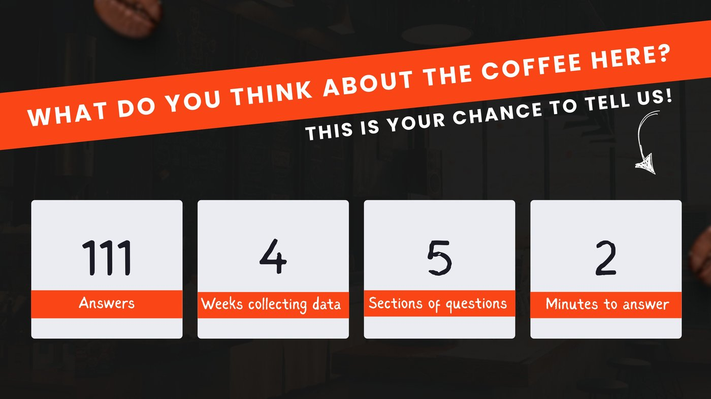
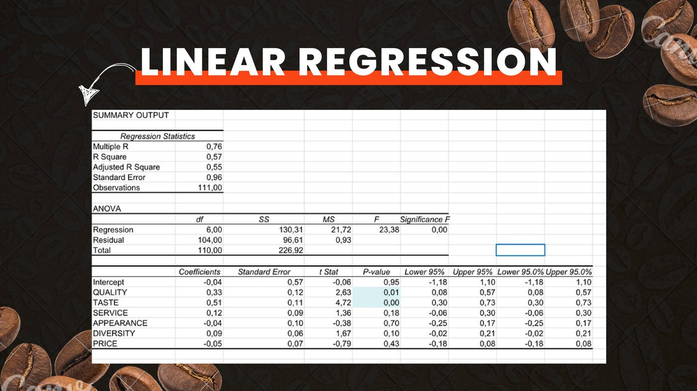
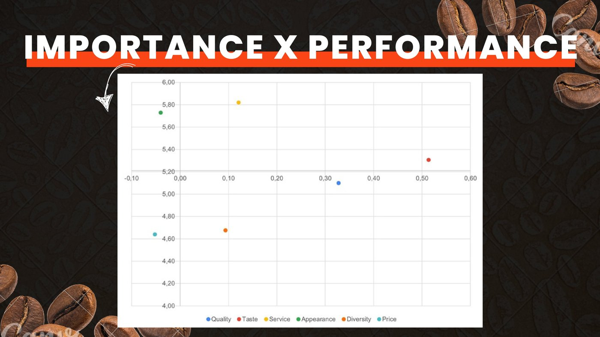
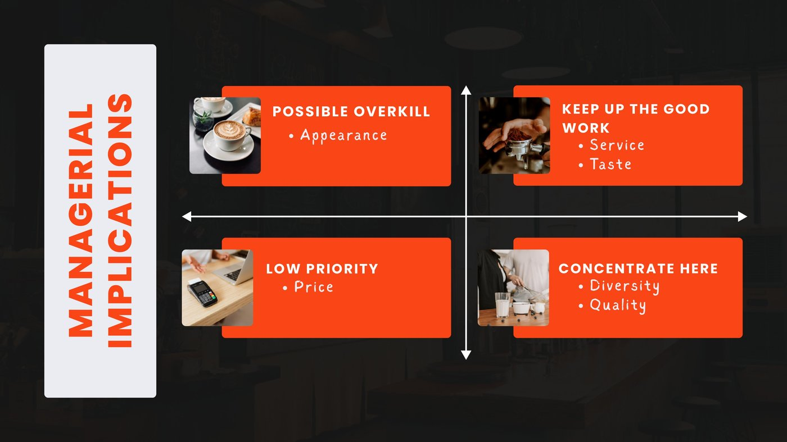

Analisi quantitativa sulla soddisfazione degli studenti per il servizio caffetteria del nuovo campus della Bologna Business School — 111 rispondenti, regressione lineare su Excel e Importance-Performance Analysis per tradurre i dati in raccomandazioni concrete.
Lavoro di gruppo — Data Analysis for Market Research, BBS
Il progetto è stato realizzato insieme ad Avventurato, Faggiotto, Gullett, Puglioli e Şuţu. Il gruppo ha condiviso la progettazione del questionario, la raccolta di 111 risposte tramite Google Forms e la presentazione dei risultati.
Il mio contributo specifico ha riguardato l’analisi quantitativa dei dati in Excel: ho applicato le formule studiate durante il corso per eseguire la regressione lineare multipla e costruire la matrice Importance-Performance, traducendo poi i risultati in implicazioni manageriali per la caffetteria.
Contesto
Il caffè alla Bologna Business School non è solo una pausa energetica: è un momento sociale che scandisce la giornata degli studenti. Con il trasferimento nel nuovo campus, abbiamo deciso di misurare quanto il servizio della caffetteria risponda alle aspettative, su quali dimensioni funziona e dove c’è margine di miglioramento.
Il questionario — somministrato via Google Forms per quattro settimane — ha coperto cinque aree: abitudini di consumo, qualità percepita del caffè, soddisfazione generale e word of mouth, diversità dell’offerta e profilo demografico. Le scale di risposta erano a scelta multipla e a valutazione da 1 a 7.

Metodologia
Il corso di Data Analysis for Market Research ci ha insegnato a ragionare sui dati in modo strutturato: prima le statistiche descrittive (media, mediana, deviazione standard, asimmetria) per capire la distribuzione di ogni variabile, poi l’analisi bivariata tramite correlazione, infine la regressione lineare multipla per isolare il contributo di ciascuna dimensione alla soddisfazione complessiva.
Il framework che ho applicato in prima persona è quello dell’Importance-Performance Analysis: i coefficienti della regressione misurano l’importanza di ogni variabile (quanto incide sulla soddisfazione), mentre le medie descrittive misurano la performance attuale del servizio su quella stessa dimensione. Incrociare i due assi produce una mappa a quattro quadranti che orienta le priorità manageriali.
Il mio contributo — 01
Ho costruito un modello di regressione lineare multipla con la soddisfazione generale come variabile dipendente e sei dimensioni come predittori: qualità, gusto, servizio, aspetto/presentazione, diversità dell’offerta e prezzo.
L’R² del modello è 0,57 (aggiustato: 0,55): le sei variabili spiegano il 57% della varianza nella soddisfazione complessiva — un risultato solido per un survey di soddisfazione, e statisticamente significativo (F significativa a p = 0,00).
Gusto (coefficiente 0,51, p = 0,00) e qualità (coefficiente 0,33, p = 0,01) sono gli unici predittori statisticamente significativi. Servizio, aspetto, diversità e prezzo non raggiungono la soglia di significatività, suggerendo che la soddisfazione complessiva si decide soprattutto in tazza.
Prezzo (coeff. −0,05, p = 0,43), aspetto (−0,04, p = 0,70) e servizio (0,12, p = 0,18) non hanno un effetto statisticamente rilevante sulla soddisfazione generale — un risultato che orienta le priorità di intervento.

Il mio contributo — 02
L’IPA mappa ogni variabile su due assi: sull’asse orizzontale il coefficiente di regressione (importanza per la soddisfazione), sull’asse verticale la media descrittiva (performance attuale percepita dagli studenti). La posizione di ogni punto nella matrice suggerisce una diversa priorità di intervento.
Qualità e diversità dell’offerta cadono in questo quadrante: sono rilevanti per la soddisfazione ma la caffetteria non performa ancora ai livelli attesi. Sono le priorità di intervento più urgenti.
Gusto e servizio si trovano qui: funzionano bene e pesano sulla soddisfazione. Vanno mantenuti ai livelli attuali senza distogliere risorse verso aree meno critiche.
Aspetto e presentazione: la caffetteria performa bene su questa dimensione, ma essa non incide significativamente sulla soddisfazione complessiva. Un segnale di risorse allocate in eccesso rispetto al ritorno atteso.
Prezzo: né importante né performante, ma soprattutto non significativo nella regressione. Intervenire sul prezzo non produce effetti rilevanti sulla soddisfazione generale degli studenti.

Il mio contributo — 03
La matrice IPA non è un fine ma un punto di partenza. Le priorità emerse — migliorare qualità e diversità dell’offerta, mantenere gusto e servizio, non sprecare risorse su prezzo e aspetto — hanno orientato le soluzioni proposte al gruppo di gestione della caffetteria.
Le raccomandazioni concrete includono: una partnership con Granarolo per ampliare le opzioni di latte (soia, riso, avena), una coffee card fedeltà in collaborazione con Granarolo stessa (ogni 10 caffè con latte, uno omaggio), il redesign dei bicchieri da asporto con branding BBS per migliorare l’esperienza visiva, e l’aggiunta di acqua frizzante e biscotto a corredo del caffè per arricchire la presentazione senza stravolgere l’offerta.

Cosa porto da questo progetto
Ciò che ho capito lavorando su questo progetto è la differenza tra avere dati e saperli usare. La regressione ha confermato alcune intuizioni (il gusto conta più di tutto), ne ha smentite altre (il prezzo è meno rilevante di quanto si pensi) e ha prodotto raccomandazioni difendibili perché fondate su evidenza statistica, non su opinioni. Il passaggio dalla regressione all’IPA all’implicazione manageriale è esattamente il percorso che voglio saper fare in qualsiasi contesto professionale.
Prossimi passi
Altre analisi tra ricerca di mercato, competitive analysis e marketing strategy.